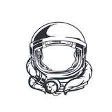

Where is the ISS at?
Explore the wonders of the cosmos with our ISS Tracker. Witness the International Space Station (ISS) as it orbits our planet in real time, discovering its current location and trajectory.
Fuel your curiosity and embark on a journey to understand this extraordinary symbol of international cooperation and human achievement in space exploration.
Engage in a fascinating adventure that combines education and entertainment as you track the ISS, enjoy the beauty of the night sky, and uncover intriguing facts about the ISS and space science.
Join us on this cosmic expedition, and let the mysteries of the universe unfold before your eyes.
ISS Details
Time:
Latitude:
Longitude:
Crew in the ISS in 2023
Expedition 69 Crew-7 members aboard the station include:
- NASA astronaut Jasmin Moghbeli
- ESA (European Space Agency) astronaut Andreas Mogensen
- JAXA (Japan Aerospace Exploration Agency) astronaut Satoshi Furukawa
- Roscosmos cosmonaut Konstantin Borisov
- NASA astronaut Stephen Bowen
- NASA astronaut Woody Hoburg
- NASA astronaut Frank Rubio
- UAE astronaut (United Arab Emirates) astronaut Sultan Alneyadi
- Roscosmos cosmonaut Sergey Prokopyev
- Roscosmos cosmonaut Dmitri Petelin
- Roscosmos cosmonaut Andrey Fedyaev